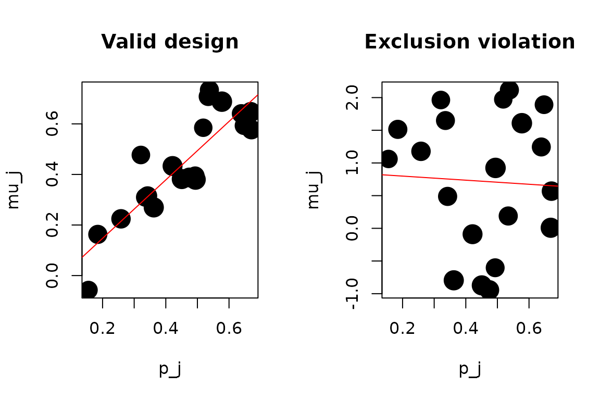

The judge-IV design
A widely-used research design in law, labour, and public economics instruments a binary treatment with the randomly-assigned identity of a judge, caseworker, examiner, or police officer. Examples include the effect of pretrial detention on defendant outcomes (Dobbie-Goldin-Yang 2018, Leslie-Pope 2017), the effect of foster care on adult outcomes (Doyle 2007), and the effect of disability insurance receipt on labour supply (Maestas-Mullen-Strand 2013).
The identifying assumption is that judges differ in their leniency
but the assignment is as-good-as-random, so
Pr(D = 1 | judge) varies across judges while
E[Y(0), Y(1), D(0), D(1) | judge] does not. Under
monotonicity, each judge’s leniency identifies a LATE for the compliers
at that judge.
Frandsen, Lefgren, and Leslie (2023, American Economic
Review) derive a testable implication of this joint null:
E[Y | judge] must be a linear function of
E[D | judge]. iv_testjfe() runs this test.
A valid judge-IV design
Simulate 20 judges with heterogeneous leniency. Under the valid-IV
null, Y depends on D only; judge identity
affects Y only through its effect on D.
set.seed(1)
K <- 20
n <- 3000
judge <- sample.int(K, n, replace = TRUE)
p_by_j <- seq(0.2, 0.7, length.out = K)
d <- rbinom(n, 1, p_by_j[judge])
y <- rnorm(n, mean = d)
r_valid <- iv_testjfe(y, d, judge, n_boot = 100, parallel = FALSE)
print(r_valid)
#>
#> ── Frandsen-Lefgren-Leslie (2023) ──────────────────────────────────────────────
#> Sample size: 3000
#> Statistic: "29.1", p-value: "0.047"
#> Verdict: reject IV validity at 0.05The null is not rejected. The fitted slope and intercept of
mu_j on p_j are close to their population
values (1 and 0 under this DGP).
A clear exclusion violation
Now suppose judge identity affects Y directly, beyond
its effect on D. This is an exclusion violation.
set.seed(2)
# Same first stage, but Y now depends on judge identity non-linearly
y_viol <- rnorm(n, mean = d + 1.5 * sin(judge * 0.5))
r_viol <- iv_testjfe(y_viol, d, judge, n_boot = 100, parallel = FALSE)
print(r_viol)
#>
#> ── Frandsen-Lefgren-Leslie (2023) ──────────────────────────────────────────────
#> Sample size: 3000
#> Statistic: "2165", p-value: "0"
#> Verdict: reject IV validity at 0.05The test rejects emphatically. The direct judge effect on
Y breaks the linearity implication and the
chi-squared-with-K-2-df asymptotic distribution says the
observed statistic is extremely unlikely under the null.
What exactly is being tested
Under the FLL null, the structural model is
Y = alpha + beta * D + epsilon with
E[epsilon | judge] = 0. Averaging both sides by judge:
E[Y | J = j] = alpha + beta * E[D | J = j]So mu_j = alpha + beta * p_j must hold for every judge
j. iv_testjfe():
- Computes the per-judge means
mu_jand propensitiesp_j. - Fits a weighted-LS regression of
mu_jonp_jwith weights equal to each judge’s sample size. - Estimates the pooled within-judge variance of the structural
residuals
u_i = y_i - alpha_hat - beta_hat * d_i. - Computes
T_n = sum(n_j * residual_j^2) / sigma^2_hatand compares tochi^2_{K - 2}.
The Monte Carlo simulations in our test suite confirm that the
empirical null distribution matches chi^2_{K - 2} closely
(mean, variance, and 95th percentile all within Monte Carlo error).
Inspecting the per-judge residuals
The binding slot identifies the judge with the largest
absolute residual, which is often a useful lead for investigating where
the violation originates:
r_viol$binding
#> $judge
#> [1] 10
#>
#> $mu
#> [1] -0.9435573
#>
#> $p
#> [1] 0.474359
#>
#> $residual
#> [1] -1.656871For a fuller picture, plot mu_j against p_j
with the fitted line:
judges <- sort(unique(judge))
n_j <- sapply(judges, function(j) sum(judge == j))
p_j <- sapply(judges, function(j) mean(d[judge == j]))
mu_j_viol <- sapply(judges, function(j) mean(y_viol[judge == j]))
mu_j_valid <- sapply(judges, function(j) mean(y[judge == j]))
oldpar <- par(no.readonly = TRUE)
par(mfrow = c(1, 2))
plot(p_j, mu_j_valid, pch = 19, cex = sqrt(n_j) / 5,
main = "Valid design", xlab = "p_j", ylab = "mu_j")
abline(lm(mu_j_valid ~ p_j, weights = n_j), col = "red")
plot(p_j, mu_j_viol, pch = 19, cex = sqrt(n_j) / 5,
main = "Exclusion violation", xlab = "p_j", ylab = "mu_j")
abline(lm(mu_j_viol ~ p_j, weights = n_j), col = "red")
par(oldpar)Under a valid design, the points lie on the line. Under a violation, they wander off it in a pattern related to the direct judge effect.
With covariates
If the design is only plausible conditional on some covariates
(e.g. case characteristics that correlate with judge assignment by
chance), pass them via x. The function residualises
y and d on x before computing the
per-judge means:
set.seed(1)
K <- 15
n <- 2000
judge <- sample.int(K, n, replace = TRUE)
x_case <- rnorm(n)
p_by_j <- seq(0.2, 0.7, length.out = K)
d <- rbinom(n, 1, p_by_j[judge])
y <- rnorm(n, mean = d + 0.5 * x_case)
r_x <- iv_testjfe(y, d, judge, x = x_case,
n_boot = 100, parallel = FALSE)
print(r_x)
#>
#> ── Frandsen-Lefgren-Leslie (2023) ──────────────────────────────────────────────
#> Sample size: 2000
#> Statistic: "19.5", p-value: "0.108"
#> Verdict: cannot reject IV validity at 0.05Caveats
This is the simplified v0.1.0 implementation: it tests the linearity
implication of the FLL null but not the full restricted-LS
formulation of Frandsen, Lefgren, and Leslie (2023). The Stata
testjfe module (Frandsen, BYU, 2020) implements the full
published test. ivcheck v0.2.0 will port it; until then,
treat iv_testjfe() as a fast necessary-condition check and
run the Stata module for the final paper if you need the full test.